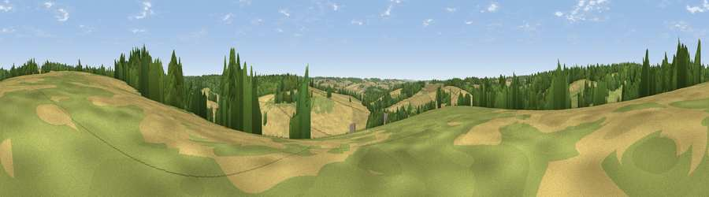

Viewpoint near Preston Candover
#39882 in England · top 69% of its area beats it · near Preston CandoverThe view, rendered

A 360° render of this exact spot computed from the terrain model, tree cover and land cover — summer colours, afternoon light, calibrated against photographs of famous viewpoints. Real trees, hedges and buildings will differ in detail.
The panorama
Grey silhouette: terrain skyline in each direction (720 bearings, Earth curvature and refraction included). Dashed green: skyline with trees (+15 m) and buildings (+8 m) as obstacles. Blue strip: how far the ground is visible on each bearing.
Where the view opens
Wedge length = distance to the farthest visible ground on that bearing (vegetation-aware). Rings at 10, 25 and 50 km.
What fills the view
49% cropland · 29% grassland · 22% woodland
Angular shares of the visible panorama (visual magnitude), not map area. Landscape diversity 0.46 (0–1 Shannon).
Key numbers
More beautiful places nearby
The staircase of upgrades: each row has a higher view potential than everything closer. Driving times are estimates from straight-line distance, calibrated against real road routing — check an actual route before setting out.
| Place | Direction | Drive | Score |
|---|---|---|---|
| Viewpoint near Dummer | NNW · 2 km | ~6 min | 50.9 |
| Viewpoint near Holybourne | E · 11 km | ~22 min | 51.2 |
| Viewpoint near Ramsdell | NNW · 12 km | ~22 min | 56.0 |
| Cottington's Hill | NW · 15 km | ~27 min | 65.6 |
| Watership Down | NW · 17 km | ~30 min | 71.4 |
| Beacon Hill | NW · 20 km | ~34 min | 76.7 |
| Viewpoint near Buriton | SSE · 26 km | ~42 min | 80.0 |
| Beacon Hill | SE · 32 km | ~50 min | 85.8 |
51.19263, -1.12524 · source: screening · position refined by local search. Computed location — check access rights before visiting.